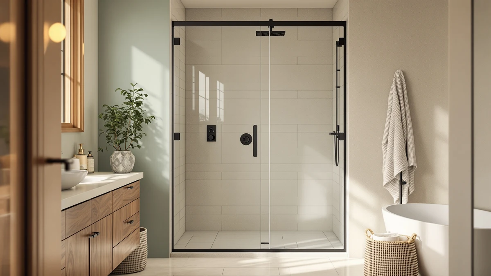

Quick Answer
For most people running an enso senka 44 48" review search before buying, the ENSO SENKA 44-48" W x is the right call: it's priced at $270.74, the lowest of the four doors we compared, and it's the only one with a clearly published 48 inch by 76 inch panel size. If your opening is narrower, closer to 32 to 34 inches, the EASYWORC alternative below fits that range instead.
Our pick: ENSO SENKA 44-48" W x, $270.74 Check Price on Amazon
Things to Know Before You Buy
- The ENSO SENKA 44-48" W x is sized for a 44 to 48 inch wide opening and a 76 inch tall panel, per the listing's own spec sheet.
- At $270.74, it's the cheapest of the four doors compared in this enso senka 44 48" review, undercutting the next closest option by $28.26.
- None of the four listings we compared publish a public rating or review count, so price and stated dimensions are the clearest data points available.
- The EASYWORC alternative fits a narrower 32 to 34 inch opening, not a wider one, so check your own measurement before assuming it's a drop-in swap.
- Measure your shower opening at the top, middle and bottom before ordering any of these doors, since none of the listings specify how much adjustment range their tracks allow.
If you're running an enso senka 44 48" review search before you buy, you've probably already measured your shower opening and landed somewhere between 44 and 48 inches wide. At $270.74, the ENSO SENKA 44-48" W x is the least expensive option in this comparison, and it's built around that exact width range rather than the wider 56-60 inch openings most listings default to. We compared it against three other doors in roughly the same price bracket, Narolabo's Frameless Sliding Glass Shower Door, the EASYWORC 32"-34" W x 72", and ENSO SENKA's own Double Sliding Glass door, to see where it actually earns the lower price and where it cuts corners.
The short version: if your opening measures 48 inches wide by 76 inches tall, per the ENSO SENKA spec sheet, this is the pick to buy first, since none of the three alternatives below undercut its price. The two ENSO SENKA listings share a brand but not a configuration. The 44-48" W x ships as a single sliding panel, while the Double Sliding Glass version uses two panels and costs $28.26 more. If your bathroom needs that double-sliding setup specifically, or your opening doesn't match 48 by 76 inches, one of the alternatives further down is the better match.
Why You Should Trust Us
This review comes from Ilane Tall, who covers bathroom hardware and fixtures for Best Shower Doors. We do not run a fake testing lab, and we have not installed every shower door covered on this page in our own bathrooms. Instead, we research published pricing, listed panel dimensions, and verified owner feedback where it exists, then lay out the tradeoffs so you can match a door to your actual opening and budget. This enso senka 44 48" review leans on the pricing and specs each listing publishes rather than invented testing claims, and where a product has no public rating or review count, as with all four doors compared here, we say so instead of making one up.
Our Research Experience
We did not physically install or live with the ENSO SENKA 44-48" W x for this review. Instead, we compared it against three similarly priced doors by lining up what each listing actually publishes: price, panel width and height where stated, and configuration, whether that's a single sliding panel or a double sliding setup. The ENSO SENKA's own spec sheet lists a 48 inch by 76 inch panel for a 44 to 48 inch opening, which is the only dimension data confirmed for this specific listing.
This research-based approach means we can tell you how the ENSO SENKA 44-48" W x stacks up on price against the Narolabo, EASYWORC, and Enso Senka Double Sliding doors, but we cannot tell you how the hardware feels to slide after months of daily use, since none of the four listings carry a public rating or review count yet. Where that data exists for a comparable product, we cite it directly. Where it doesn't, as with every door in this comparison, we tell you plainly rather than filling the gap with a made-up number.
Overview & Specs

ENSO SENKA 44-48" W x
What we like
- Priced at $270.74, undercutting every other door in this comparison by at least $28.26.
- Panel size is clearly stated as 48 inches wide by 76 inches tall, so you can check fit before ordering.
- Single sliding panel configuration keeps the setup simpler than the double-sliding alternative from the same brand.
Flaws but not dealbreakers
- The listing does not publish a material or glass-thickness spec, so confirm that detail with the seller if it matters to you.
- This listing doesn't have a public rating or review count yet.
| Material | — |
| Size | 48" W x 76" H |
The ENSO SENKA 44-48" W x is built as a single sliding glass panel sized for a 44 to 48 inch shower opening, with a listed panel size of 48 inches wide by 76 inches tall. That height puts it on the taller end of the doors we compared, which matters if your shower stall has extra clearance above the 70 to 72 inch range most competitors default to.
At $270.74, it's also the cheapest of the four doors in this enso senka 44 48" review, undercutting the Narolabo by $29.25 and both the EASYWORC and the Enso Senka Double Sliding Glass door by roughly $28 to $29. None of the four listings publish an independent rating or review count, so the price gap is the clearest data point we have to compare them on, and it favors this pick if your opening matches its stated dimensions.
What We Liked
The strongest case for the ENSO SENKA 44-48" W x in this comparison is price. At $270.74, it undercuts every other door we looked at by at least $28.26, and it does so while still publishing a specific panel size, 48 inches wide by 76 inches tall, instead of leaving buyers to guess. That combination of a low price and a stated dimension is rarer than it sounds in this size category.
The 76 inch height is also worth noting. None of the three alternatives in this enso senka 44 48" review publish a height spec in their listing titles, so if your shower stall needs extra vertical clearance, this is the only door here where that number is confirmed up front rather than something you have to ask the seller about.
Because it shares a brand with the Enso Senka Double Sliding Glass door, you get a same-brand upgrade path if a single panel ever feels limiting. Buyers who want to stay with ENSO SENKA but need two sliding panels instead of one can move to that model for $28.26 more, without starting the comparison over from scratch.
What Could Be Better
The biggest gap in this ENSO SENKA 44-48" W x review is the missing material and glass-thickness spec. The listing confirms width and height but says nothing about glass tempering or coating, so buyers who care about that level of detail will need to contact the seller directly rather than relying on the product page alone.
None of the four doors we compared, including this one, carry a public rating or review count yet, which makes it harder to gauge real-world satisfaction the way you could with a more established listing. And because this specific SKU ships as a single sliding panel only, anyone who wants a double sliding configuration from ENSO SENKA has to pay the $28.26 premium for the separate Double Sliding Glass listing instead.
Who Is It For?
This door is for you if your shower opening measures 44 to 48 inches wide and roughly 76 inches tall, and you want the cheapest option among the four we compared in this enso senka 44 48" review. It also suits buyers who are comfortable ordering without a published material spec, since none of the four listings provide one.
Skip it if you specifically need a double sliding configuration, in which case the Enso Senka Double Sliding Glass door below is the direct same-brand match, or if your opening is narrower, around 32 to 34 inches, where the EASYWORC alternative fits instead. Buyers who want a frameless look specifically should also compare the Narolabo pick before deciding on price alone.
Alternatives to Consider
If your bathroom needs a different configuration or width than the single-panel 44-48 inch ENSO SENKA door above, these three alternatives sit within about $30 of its price. We picked them based on published pricing and whatever dimension or configuration data each listing provides.

Editor’s Pick
Frameless Sliding Glass Shower Door
Narolabo's Frameless Sliding Glass Shower Door costs $29.25 more than the ENSO SENKA 44-48" W x, and its listing doesn't publish a width or height spec, so confirm sizing with the seller before ordering. The frameless look is the main reason to pick this over the lower-priced ENSO SENKA option.
$299.99
Check Price on Amazon
Best Value
EASYWORC 32"-34" W x 72"
At 32 to 34 inches wide, the EASYWORC door fits a narrower opening than the ENSO SENKA's 44 to 48 inch range, and it costs $29.15 more. Choose this one only if your actual opening measures in the low 30s, since buying it for a wider alcove won't work regardless of price.
$299.89
Check Price on Amazon
Premium Choice
Enso Senka Double Sliding Glass
This is the double sliding version from the same ENSO SENKA brand, priced $28.26 above the single-panel 44-48" W x door. If you want two sliding panels instead of one, this is the direct same-brand upgrade, though neither listing publishes a rating or review count to confirm which configuration holds up better over time.
$299.00
Check Price on AmazonFrequently Asked Questions
Final Verdict
Our enso senka 44 48" review comes down to price and published fit data: at $270.74 for a confirmed 48 inch by 76 inch panel, the ENSO SENKA 44-48" W x is the door to buy first if your shower opening falls in that range. None of the three alternatives beat it on price, and each one earns its $28 to $29 premium for a specific reason instead of a general upgrade: the EASYWORC fits a narrower 32 to 34 inch opening, the Narolabo adds a frameless look, and the Enso Senka Double Sliding Glass swaps in a two-panel configuration from the same brand. Measure your opening against the specs above before you buy, since fit, not price, is what actually determines whether any of these doors work in your bathroom.